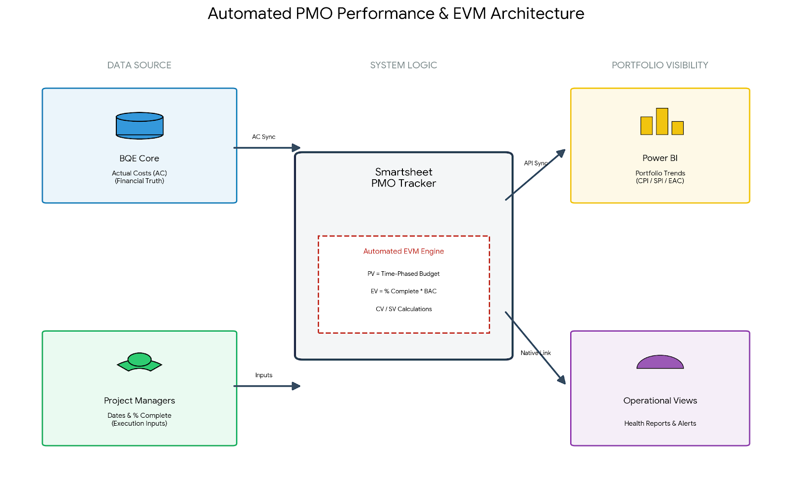
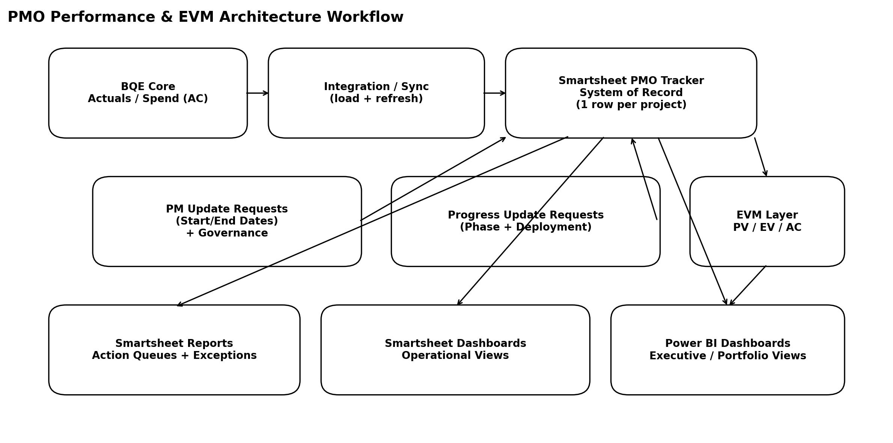

01 — Overview
System at a Glance
🏦
Financial Source
BQE Core
Actuals / Spend (AC)
Actuals / Spend (AC)
📋
System of Record
Smartsheet
PM-governed plan + progress
PM-governed plan + progress
📊
Analytics Engine
Power BI (DAX)
CPI / SPI / EAC / ETC
CPI / SPI / EAC / ETC
🔐
Governance
Update Requests
Scheduled · Restricted fields
Scheduled · Restricted fields
02 — Architecture Doc
Reference Architecture
Purpose
A reusable reference architecture for a governed PMO performance system that:
- Ingests financial actuals/spend from BQE Core (Actual Cost inputs)
- Collects PM-owned plan dates and execution progress through governed Smartsheet Update Requests
- Calculates EVM-style metrics in Smartsheet and Power BI (Power Query + DAX)
- Delivers operational Smartsheet dashboards and executive Power BI dashboards
Logical Layers
| Layer | Purpose | Components |
|---|---|---|
| Financial Source | Provide actuals/spend and financial truth (AC) | BQE Core: actual cost/spend; financial attributes |
| Integration / Sync | Load and refresh actuals into Smartsheet keyed by Project ID | API/ODBC/export+load; scheduled sync; idempotent updates |
| System of Record | Central PMO tracker with governed plan/progress fields | Smartsheet master tracker; reference/lookup sheets |
| Governed Inputs | Collect PM-owned dates and progress with accountability | Update Requests; restricted fields; cadence rules; auditability |
| EVM Calculation | Compute PV/EV/AC and derived KPIs | Smartsheet formulas; Power Query (M); DAX measures |
| Visibility Layer | Operational + executive views and exception management | Smartsheet reports/dashboards; Power BI dashboards |
Data Model — Smartsheet PMO Tracker
- Primary key: Project ID (joins BQE Core actuals to Smartsheet plan/progress)
- Financial fields (from BQE Core): actual cost/spend and related financial metrics
- PM-governed plan fields: Project Start Date and Project End Date via Update Requests
- Execution fields: phase completion updates and deployment progress
- Traceability: last updated date, owner fields, notes/evidence links
Governance & Update Workflows
- Controlled input: PMs provide updates through Smartsheet Update Requests, not broad sheet edit access
- Cadence rules: weekly/bi-weekly or stage-based scheduling to maintain data freshness
- Field-level governance: plan fields (start/end dates) are restricted as baseline-defining inputs
- Quality controls: required fields, standardized definitions, and exception reporting for missing updates
EVM Calculation Approach
- Inputs:
PVfrom plan timelines ·EVfrom phase completion ·ACfrom BQE Core - Core KPIs:
CPI·SPI·CV/SV(cost/schedule variance) - Forecasting:
EACandETCmeasures in Power BI for portfolio trend analysis - Implementation: Smartsheet formulas · Power Query (M) · DAX measures
Dashboards & Reporting
- Smartsheet operational dashboards: action queues, phase/deployment rollups, exception views
- Power BI executive dashboards: CPI/SPI trend lines, EAC/ETC forecasting, variance analysis, portfolio comparisons
03 — Full Document
PDF Reference
04 — Visual Artifacts
Dashboards & Architecture Diagrams

PMO_EVM_Dashboard.png — Executive Portfolio Dashboard

PMO_EVM_Smartsheet.png — Architecture Overview

PMO_EVM_Workflow_Diagram.png — Workflow Diagram
05 — Flow Diagram
Live Architecture Diagram
flowchart TD
A[BQE Core\nActuals/Spend AC] --> B[Integration / Sync\nload + refresh]
B --> C[Smartsheet PMO Tracker\nSystem of Record]
D[PMs / Owners] -->|Update Requests\nStart/End Dates governed| C
D -->|Update Requests\nPhase + Deployment progress| C
C --> E[Smartsheet Formula Layer\nOperational KPIs]
C --> F[Power Query M\nData shaping + joins]
F --> G[DAX Measures\nEVM KPIs CPI/SPI/EAC/ETC]
G --> H[Power BI Dashboards\nExecutive / Portfolio Views]
C --> I[Smartsheet Reports\nAction queues + exceptions]
I --> J[Smartsheet Dashboards\nOperational visibility]
06 — Implementation
Implementation Checklist
- ◆Define PMO tracker schema — Project ID key, owners, plan fields, progress fields, financial fields
- ◆Stand up integration/sync from BQE Core to Smartsheet for actuals/spend refresh
- ◆Configure governance — restricted plan fields, update request cadence, required-field rules
- ◆Implement progress update workflows for phase completion and deployment tracking
- ◆Build EVM metrics — PV/EV/AC inputs, CPI/SPI, variance, and forecasting measures (EAC/ETC)
- ◆Publish Smartsheet operational reports + dashboards and Power BI executive dashboards
- ◆Document definitions and SOPs; establish operating cadence for data quality and exception management